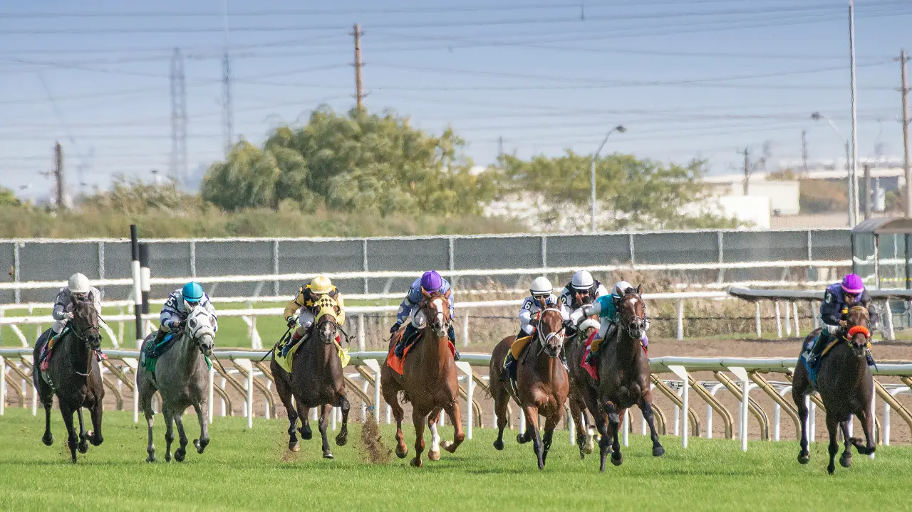

Hippodrome
Enghien
Discipline
Trot Attelé
Distance
2150m
Partants
15
Dotation
59 000€
Vidéo du jour : Regarder l'analyse complète sur YouTube →
| N° | Cheval | Driver | Cote |
|---|---|---|---|
| 1 | IDYLLE DU PERSIL | Gelormini G. | 66 |
| 2 | JIBI DU FRUITIER | Mottier M. | 31 |
| 3 | IOUPY TOLLEVILLE | — | 40 |
| 4 | JOS MAZA | Rothengatter M. | 6 |
| 5 | HAPPY PACHA | — | 30 |
| 6 | HERMES D ECROVILLE | — | 28 |
| 7 | IN LOVE REGLISSE | — | 25 |
| 8 | JAGUAR DU FAN | — | 20 |
| 9 | GALOPIN DE BIANCA | — | 50 |
| 10 | JEWEL TOUCH | Raffin E. | 5 |
| 11 | INDIGO DU PERCHE | Ouvrie F. | 4 |
| 12 | JOYCE DES GRANGES | Rochard B. | 8 |
| 13 | INTELLO DE CHENU | — | 55 |
| 14 | JAZZ DE PADD | Collette A. | 5 |
| 15 | INTREPIDE DES BOIS | Lagadeuc F. | 7 |
Sélection de 8 chevaux :
1014411512112
Notre favori : 10 — JEWEL TOUCH
2ème : 14 — JAZZ DE PADD
3ème : 4 — JOS MAZA
4ème : 1 — IDYLLE DU PERSIL
5ème : 15 — INTREPIDE DES BOIS
10 — 14 — 4
Chances : 12 combinaisons
10 — 14 — 4 — 1 — 15
Chances : 60 combinaisons
10 — 14 — 4 — 1 — 15 — 12 — 11 — 2
Chances : 336 combinaisons